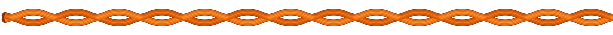
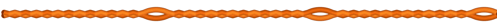
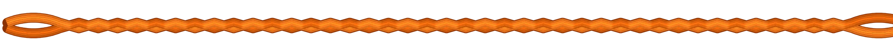
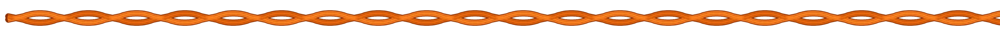
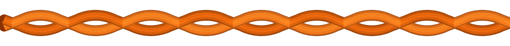
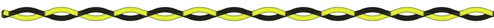
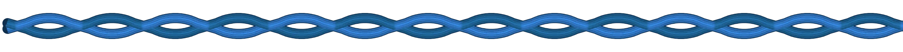
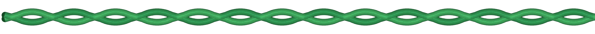

For companies
Made to your spec.
The six standard sizes are what we stock. For larger orders we make RunLock the way you need it: the rope is braided to order on our own machines in Tösse, so size, loop spacing, length and colour are all open.
The six standard sizes are what we stock. For larger orders we make RunLock the way you need it: the rope is braided to order on our own machines in Tösse, so size, loop spacing, length and colour are all open.
Standard RunLock has a loop every few centimetres along the whole length. On a special run the braiding machine is set up for your pattern instead: where the loops sit, how thick the rope is and which colours go into it. A few examples, drawn to the same scale.

This is the rope in the shop: joined every 40 to 65 mm, so there is always a loop where you need one. Six sizes, five colours.

Between the loops the two sides are braided straight through. The spacing is yours to choose: a loop every metre for a line of hooks, every 100 metres on a 1 000 metre roll, or spaced to match your product.

A plain braided rope with one fixed loop at either end, braided in rather than knotted or spliced. Cut to your length and sealed, every piece ready to use.


The size is the number of threads on each side. More threads give a thicker rope with longer loops and a higher breaking strength: we know today that we can make a rope that holds around 1 500 kg, and thicker is most likely possible. Tell us the load and we test it.



The two sides are braided from separate thread, so they can be different colours: black and fluorescent yellow as on the leashes and the snowmobile set, or a combination of your own. A colour for your brand, or one colour per size so your staff never mix them up.
Thinner than No 4 or thicker than No 20. We know today that we can make a rope that holds around 1 500 kg, and thicker is most likely possible. Tell us the load and we test it.
Standard RunLock has a loop every few centimetres. A special run can have loops only where they are needed: 100 metres with a loop at each end, or 1 000 metres with a loop every 100 metres. Up to your imagination.
Special colours for larger quantities, on top of the five standard ones. A colour for your brand, or one colour per size so your staff never mix them up.
Cut to length and melted at the ends, or on rolls by the metre. Every cut piece is a complete tool: there is nothing to splice or add.
Braided under our own quality control from 100 % polyester, with breaking strength tested by RISE. One factory, one contact, from the first sample to the delivery.
Send the use, the load, the length and the quantity, and we come back with a proposal and a sample. info@texsolv.se
Send us the use, the load it has to take, the length you need and the quantity. We come back with a proposal, and with a sample if the rope is new to us. The rope is braided on our machines in Tösse, cut and sealed at the ends or wound on rolls, and shipped from the factory. One factory, one contact, from the first sample to the delivery.
A special run of loops only at the ends, a two-colour braid, a size between the standard ones, a private colour for your brand: all of it is a question of quantity, not of possibility. For the standard sizes and colours, by the metre, see the bulk roll.
Use, load, length, quantity. We reply from the factory, usually the same day.
info@texsolv.se →We would like to use Google Analytics to see which pages are read. No cookies are set unless you say yes. How we handle your data →